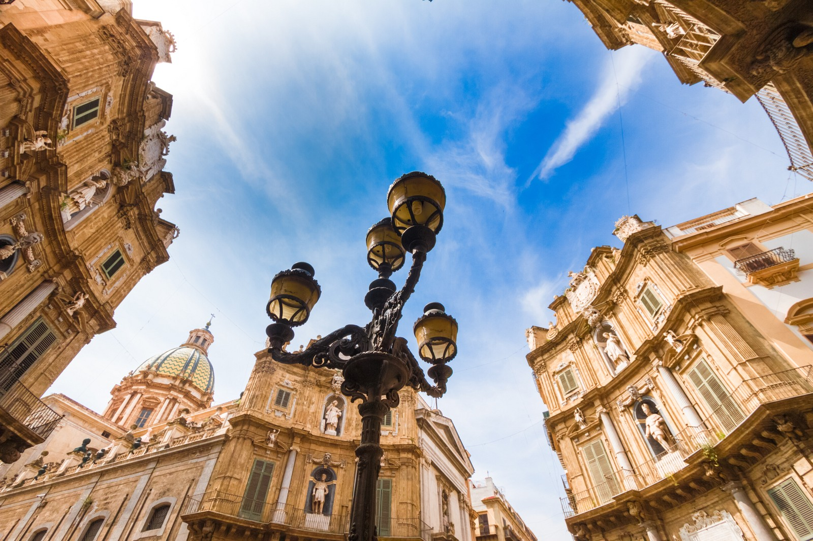

Piazza Duomo,
Palermo

Piazza Pirandello
La Piazza Duomo è il cuore pulsante della città di Catania, un luogo dove storia, arte e identità urbana si fondono in uno scenario di straordinaria suggestione. Situata ai piedi dell’Etna, la piazza racconta la capacità della città di rinascere più volte dalle proprie distruzioni, in particolare dopo il devastante terremoto del 1693 che portò alla ricostruzione in stile barocco.
Il volto attuale della piazza è infatti il risultato di questa rinascita: un perfetto esempio di barocco siciliano, elegante e scenografico. Al centro si erge la celebre Fontana dell’Elefante, simbolo indiscusso della città. La statua in pietra lavica raffigurante un elefante – affettuosamente chiamato “Liotru” dai catanesi – sostiene un obelisco egizio, creando un connubio unico tra culture e simbolismi. Secondo la tradizione, l’elefante avrebbe poteri protettivi contro le eruzioni dell’Etna, aggiungendo un tocco di leggenda al luogo.
A dominare la piazza è la maestosa Cattedrale di Sant’Agata, dedicata alla patrona della città. La sua facciata barocca, riccamente decorata, custodisce al suo interno le reliquie di Sant’Agata, al centro di una delle feste religiose più importanti e partecipate d’Italia. Durante questa celebrazione, la piazza si trasforma in un teatro a cielo aperto, animato da devozione, luci e tradizioni secolari.
Intorno alla piazza si sviluppa un insieme armonioso di edifici storici, tra cui palazzi nobiliari e istituzioni cittadine, che contribuiscono a creare un’atmosfera elegante ma al tempo stesso vivace. Di giorno è animata da turisti e cittadini, mentre la sera si illumina, diventando un punto d’incontro suggestivo. La vicinanza al mercato del pesce, uno dei più autentici della Sicilia, aggiunge ulteriore vitalità e colore all’esperienza.
Curiosità interessante: la pietra lavica utilizzata per molti elementi architettonici della piazza conferisce quel caratteristico contrasto cromatico tra il nero della lava e il bianco della pietra calcarea, rendendo l’ambiente unico e immediatamente riconoscibile.


Teatro Massimp
Il più grande teatro lirico d’Italia e uno dei più imponenti d’Europa. La sua facciata monumentale e la scalinata lo rendono uno dei soggetti fotografici più iconici di Palermo.

Fontana Pretorica
Conosciuta anche come “Fontana della Vergogna”, è una delle fontane rinascimentali più spettacolari d’Italia, ricca di statue marmoree e dettagli scenografici.

Quattro Canti
Iconico incrocio barocco nel cuore della città, caratterizzato da quattro facciate scenografiche riccamente decorate. È considerato il centro simbolico della Palermo storica.